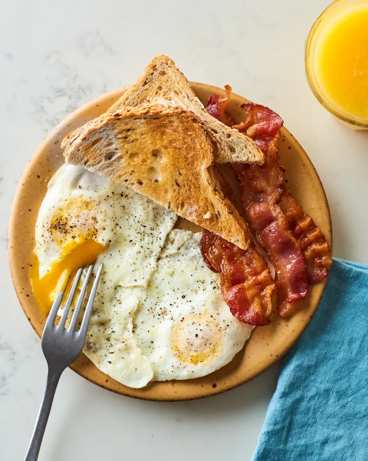

A breakfast of over-easy eggs sounds simple enough, right? Just crack some eggs into a pan and flip ’em over when they’re ready. But how do you achieve perfectly set whites that surround runny, intact yolks? Perfect over-easy eggs aren’t hard to fry up (even if you haven’t had your first cup of coffee yet) — as long as you keep a few key things in mind.